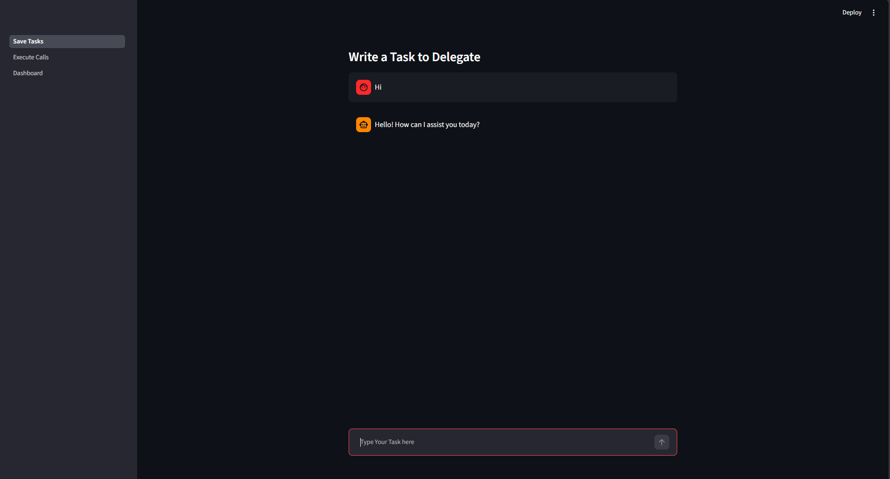
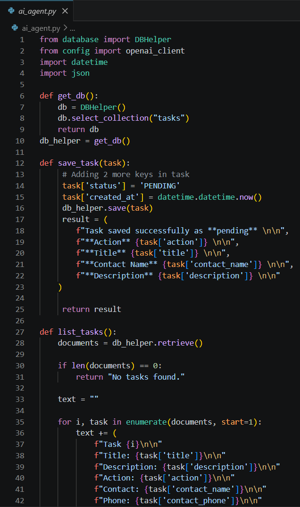
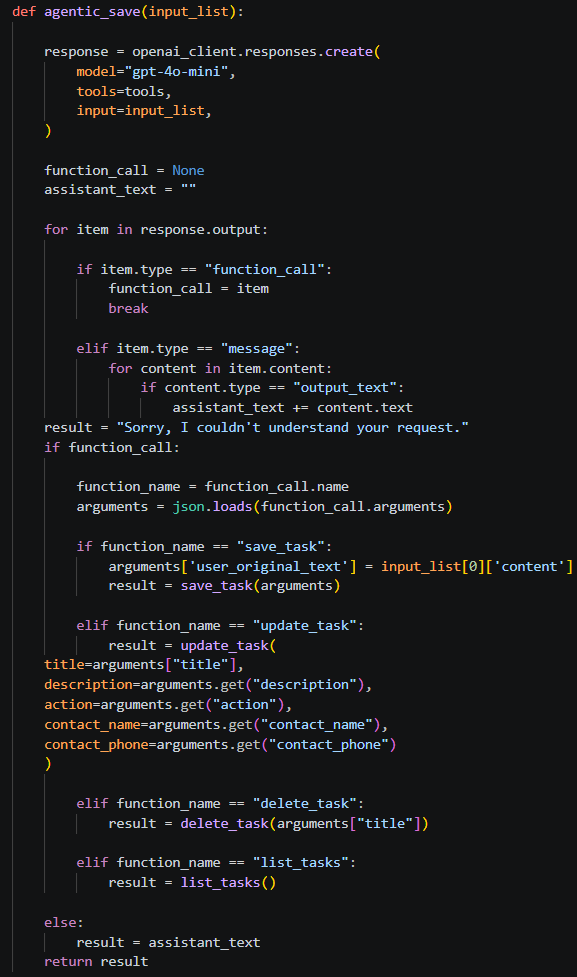
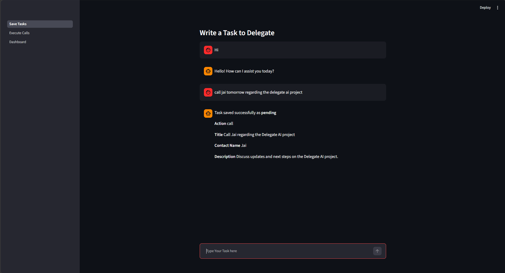

Date: 23rd July 2026
Duration: 2 Hours
Training Company: Auribises Technologies
Trainer: Mr. Ishant Kumar
After establishing the foundation of the Delegate AI project, today's session focused on developing its first functional component—an intelligent task management system. Using Streamlit, we designed an interactive chat-based interface through which users could describe tasks in natural language. OpenAI Function Calling was then integrated to interpret user requests and automatically execute the appropriate database operations such as creating, updating, listing, and deleting tasks. By the end of the session, Delegate AI had evolved from a project structure into an AI-powered application capable of managing tasks autonomously.
The development began by creating the application's user interface using Streamlit. A clean chat-based
layout was implemented using st.chat_input() and st.chat_message(), allowing users
to interact with the AI assistant naturally instead of filling out traditional forms. Session state was also
introduced to preserve the conversation history throughout the user's interaction, creating a seamless chat
experience.

The primary objective of today's implementation was to build an Agentic Task Manager capable of handling task-related operations automatically. Backend functions were developed for saving new tasks, listing all stored tasks, updating existing tasks, and deleting completed or unwanted tasks. Every task stored in MongoDB contained details such as title, description, action type, contact name, creation timestamp, and current status, allowing Delegate AI to maintain a structured workflow for future automation.

A major highlight of the session was integrating OpenAI Function Calling into the application. Instead of manually selecting which operation to perform, users could simply describe their intentions in natural language. The language model analyzed each request, selected the most appropriate backend function, and generated the required parameters automatically. Depending on the user's request, Delegate AI could save a new task, update an existing one, retrieve all stored tasks, or remove tasks directly from the database. This demonstrated how large language models can act as intelligent decision-making agents within software applications.

By combining Streamlit, OpenAI, and MongoDB, the application became capable of understanding conversational instructions such as creating reminders, modifying task details, displaying pending work, or deleting unnecessary entries. The chatbot translated user requests into structured function calls, making task management significantly more intuitive than traditional menu-driven interfaces. This marked the first stage of Delegate AI where artificial intelligence actively controlled the application's business logic.

Complete the Agentic Task Manager by integrating OpenAI Function Calling with MongoDB so that the AI assistant can understand natural language requests and perform all CRUD operations without requiring manual user input.
Today's session was one of the most exciting parts of the training because it demonstrated how artificial intelligence can directly control software applications. Instead of relying on buttons and forms, the AI assistant interpreted user requests and performed the required database operations automatically. Watching Delegate AI manage tasks through simple conversations highlighted the practical power of LLMs and gave me a deeper understanding of how modern AI assistants are built.
In the next session, Delegate AI will be extended beyond task management by integrating an AI-powered caller agent using ElevenLabs. The application will begin executing pending tasks through automated phone calls, monitor conversation status, and retrieve complete call transcripts for users.